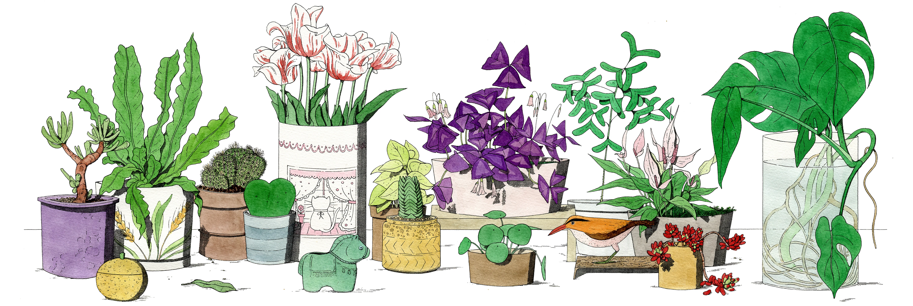

MISCELLANEOUS

MY SHELF
My shelf, personalized shelf filled with items of deep personal significance, carefully arranged to reflect mamories, milestones, and the essence of one's unique identity.
Price: ₱9,600.00
MY BENCH
My bench, familiar, well-worn bench that offers a quiet place of reflection, symbolizing comfort, solitude, and the passage of time in one's personal space.
Price: ₱7,700.00

KOREAN APERITIF
Korean Aperitif, light and refreshing Korean drink, perhaps a delicate soju-based cocktail or a herbal infusion, meant to cleanse the palate and set the tone for an upcoming meal.
Price: ₱6,400.00
JAPANESE APERITIF
Japanese Aperitif, such as sake or umeshu, offering a balanced mix of sweet and savory flavors to prepare the senses for a culinary experience rich in subtlety and depth.
Price: ₱6,400.00